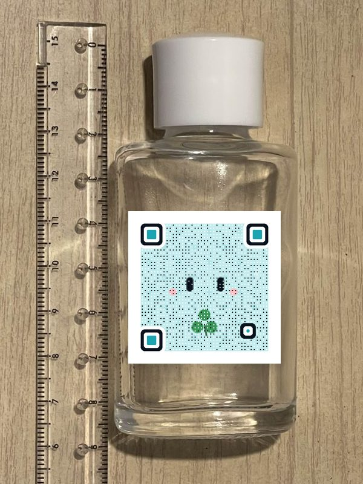
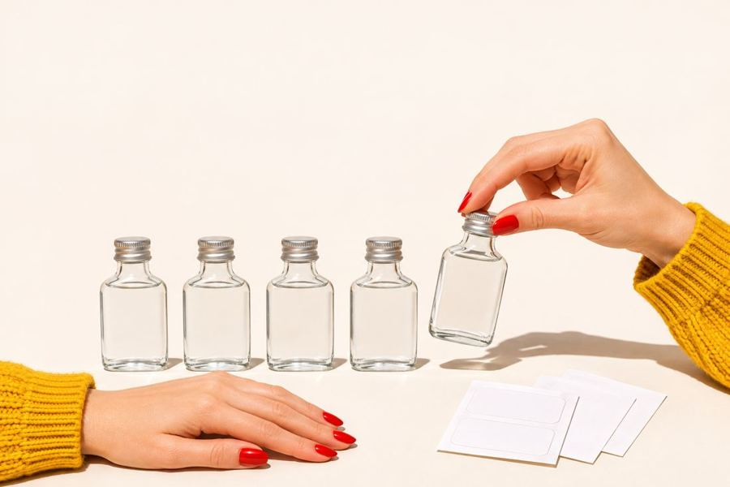

1/4読めましたねYou scanned it
この絵、QRでした。This drawing was a QR code.

絵だと思って読んだら、QRだった。この小瓶は、ラベルの絵そのものが入口です。You thought it was a picture — it was a QR. On this little bottle, the label art itself is the way in.
2/4絵の答え合わせThe answer to the drawing
この子が持っていたのは、三つ葉。It was holding a three-leaf clover.
三つ葉は「3本で1セット」のしるし。3本を飲み比べると、自分が好きな味の"側"がひとつ分かります。Three leaves mean “a set of three.” Taste all three, and you find out which side of sake is yours.

飲み方：1口目を舌の上で転がして、2〜3分おいてから2口目。How to drink: roll the first sip on your tongue, wait 2–3 minutes, then take the second.
3/42択Pick one
ひと口目、どっちに感じた？First sip — how did it feel?
正解はありません。感じたほうを。There is no right answer. Pick what you felt.
4/4あなたはYou are
“”側。On the “” side.
明日そのまま言える一文A line you can say tomorrow
「日本酒は“ふくらむ”か“きれる”かで選ぶといいよ。私は派。」“Pick sake by fukuramu (blooms) or kireru (cuts clean). I’m a person.”
長押しでも保存できます。You can also long-press to save.
Your Japanese word today: ()
2本目は反対側を。言葉は、比べると体に入ります。Try the other side with bottle two. Words stick when you compare.
造った人Who made it
造ったのは、明石の酒蔵。Made by a sake brewery in Akashi.
本番では、ここに蔵の名前と物語、そして蔵のネットショップへの入口が入ります。小瓶で好みが分かったら、次の1本は蔵から。In the real version, the brewery’s name, its story and a link to its online shop go here. Find your taste with a small bottle — get the next one from the brewery.